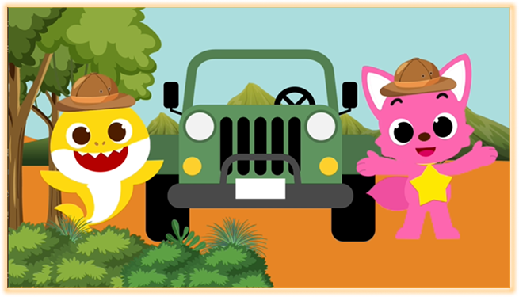
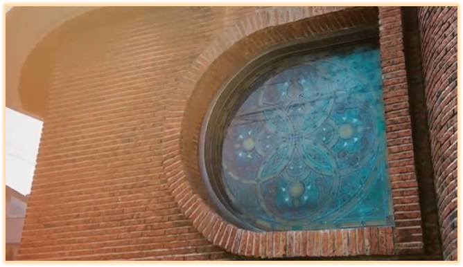

Pinkfong 공연 홍보 광고 영상 제작
Pinkfong 캐릭터를 활용해 다양한 연령대가 쉽고 친근하게 접근할 수 있는 공연 홍보 영상을 제작하고자 기획한 작업. 애니메이션 기반의 움직임과 밝은 분위기를 중심으로 캐릭터 콘텐츠에 대한이해도를 높이고, 생동감 있는 광고 영상을 표현하는 방향으로 제작함. 또한 직접 녹음한 내레이션을 함께 활용해 영상의 몰입감과 전달력을 더욱 높이고자 함.
광고 영상 제작
5일
Ai, Ps, Pr, Ae
최근 엔터테인먼트 산업에서 그룹별 캐릭터 IP 활용이 활발하게 이루어지는흐름 속에서, 캐릭터 기반 컨텐츠를 직접 활용해볼 수 있었던 의미 있는 작업. 캐릭터의 움직임과 표정, 장면 전환의 흐름을 자연스럽게 연결하는 과정 속에서 애니메이션 연출과 모션 표현 방식에 대한 이해를 넓힐 수 있었으며, 직접 녹음한 내레이션을 더해 영상의 분위기와 전달력을 조율하는 경험까지 함께 할 수 있었음. 또한 어린이부터 다양한 연령대까지 고려하며 영상의 속도감과 시각적 흐름을 구성해보며, 컨텐츠 대상에 따라 연출 방식과 분위기가 달라진다는 점에 대해 배우게 된 작업.

SEVENTEEN 자체 콘텐츠 오프닝 영상 제작
세븐틴 자체 컨텐츠 고잉세븐틴 프로그램의 밝고 트렌디한 분위기를 살리기 위해 그래픽 요소, 전환 효과 등을 활용하여 오프닝 영상을 제작
오프닝 영상 제작
4일
Ai, Ps, Pr, Ae
프로그램의 시작을 알리는 영상인 만큼, 짧은 시간 안에 시선을 사로잡으면서 지루하지 않게 흐름을 이어가는 부분에 집중하며 작업했던 프로젝트. 장면 전환과 그래픽 요소의 속도감, 분위기 조절을 반복적으로 고민하며 몰입감을 자연스럽게 유지하는 방법에 대해 배울 수 있었음. 또한 단순한 영상 편집을 넘어 컨텐츠의 전체 분위기를 결정하는 오프닝의 역할에 대해 고민해보며, 짧은 영상 안에서도 효과적으로 전달하는 방식에 대한 이해를 넓힐 수 있었음.

감정과 메시지 중심의 연출을 담아낸 단편 아트 필름 프로젝트
타인을 쉽게 판단하고 평가하는 사회적 시선에 대해 질문을 던지며, 스스로의 기준과 시각을 돌아볼 수 있도록 하는 메시지를 담아 제작한 단편 아트 필름 프로젝트. 장면의 분위기와 상징적인 연출 요소를 활용해 단순한 이야기 전달을 넘어, 영상을 보는 사람마다 각자의 시선으로 의미를 해석할 수 있는 방향으로 구성함.
단편 아트 필름 제작
14일
Ps, Pr, Ae
팀원과 함께 장면 구성과 연출, 촬영 흐름을 고민하며 실제 영화 제작 과정을 경험하는 듯한 느낌으로 진행했던 작업. 단순한 영상 편집을 넘어 촬영 구도와 분위기, 장면 전환 방식까지 함께 고민하며 다양한 방향의 영상 제작 방식에 대해 배울 수 있었음. 또한 메시지를 효과적으로 전달하기 위해 장면의 감정선과 시각적 분위기를 조율하는 과정 속에서, 영상 연출과 스토리 흐름이 전달력에 미치는 영향에 대해 깊게 고민해볼 수 있었던 프로젝트.